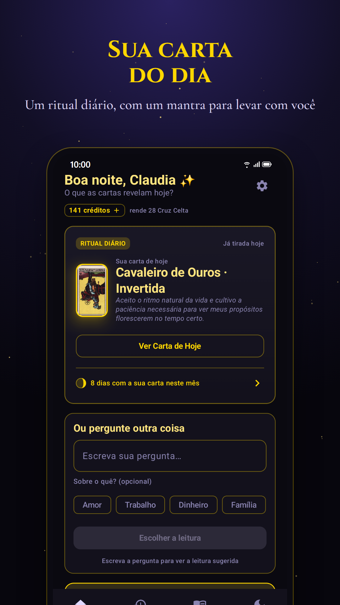
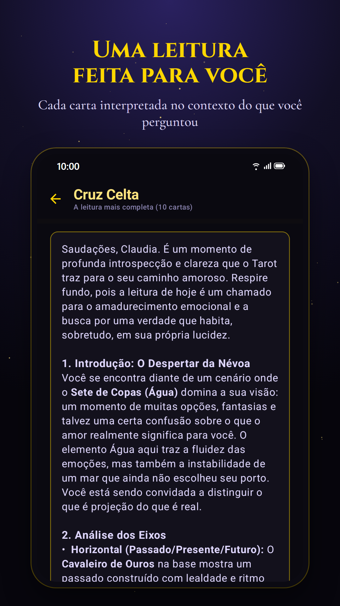
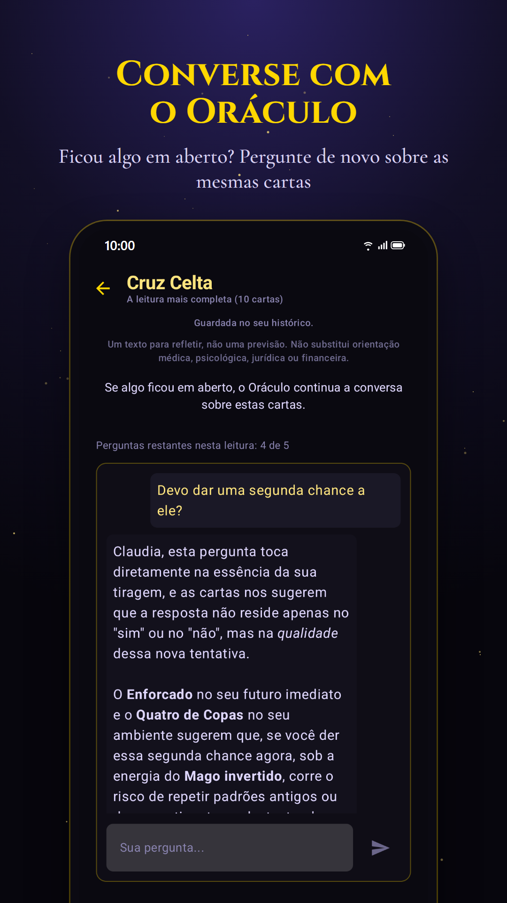

Pílulas de Tarô
Um minuto por dia com o tarô. A Carta do Dia é grátis, todos os dias, e quando houver uma pergunta de verdade, a leitura fala dela, carta por carta.
Em breve na Google Play. Enquanto isso, acompanhe em instagram.com/pilulasdetaro.



A mesma pergunta, a mesma resposta
Se você repetir a pergunta nos 30 dias seguintes, mesmo com outras palavras, o app devolve as mesmas cartas e a mesma leitura, com a data da consulta anterior, e não gasta crédito. O tarô não muda de ideia porque você insistiu.
As tiragens
| Carta do Dia 1 carta, todo dia | grátis |
| Sim ou Não 1 carta | 1 crédito |
| Três Cartas passado, presente e futuro | 3 créditos |
| Amor 3 cartas | 3 créditos |
| Carreira e Dinheiro 3 cartas | 3 créditos |
| Cruz Celta a leitura completa, 10 cartas | 5 créditos |
A instalação traz 3 créditos de boas-vindas. O custo aparece antes de você escrever a pergunta, os créditos comprados não vencem e você pode definir um teto de gasto por mês. Depois da leitura, dá para continuar a conversa sobre ela com o Oráculo.
Significado das cartas
O que cada uma das 78 cartas diz, direita e invertida, no amor, no trabalho e como conselho. Ver todas as cartas.
 O Louco
O Louco O Mago
O Mago A Sacerdotisa
A Sacerdotisa A Imperatriz
A Imperatriz O Imperador
O Imperador O Hierofante
O Hierofante Os Amantes
Os Amantes O Carro
O Carro A Força
A Força O Eremita
O Eremita Roda da Fortuna
Roda da Fortuna A Justiça
A Justiça O Enforcado
O Enforcado A Morte
A Morte A Temperança
A Temperança O Diabo
O Diabo A Torre
A Torre A Estrela
A Estrela A Lua
A Lua O Sol
O Sol O Julgamento
O Julgamento O Mundo
O Mundo
Privacidade
O conteúdo das suas leituras fica no seu aparelho, e o nosso servidor não guarda a sua pergunta. Não há anúncios. Os detalhes estão na Política de Privacidade.